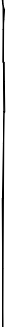

> Canción de julio “La Bamba” Los Lobos Para bailar la bamba Para bailar la bamba Se necesita una poca de gracia Una poca de gracia, pa(ra) mi, pa(ra) ti Ay arriba y arriba Ay arriba y arriba Por ti seré Por ti seré Por ti seré Yo no soy marinero Yo no soy marinero Soy capitán Soy capitán Soy capitán Bamba, bamba Bamba, bamba Bamba, bamba Para bailar la bamba Para bailar la bamba Se necesita una poca de gracia Una poca de gracia, pa(ra) mi, pa(ra) ti Ay arriba y arriba Para bailar la bamba Para bailar la bamba Se necesita una poca de gracia Una poca de gracia, pa(ra) mi, pa(ra) ti Ay arriba y arriba Ay arriba y arriba Por ti seré Por ti seré Por ti seré Bamba, bamba Bamba, bamba Bamba, bamba Gramática: preposiciones “para” y “por” 機能が似ている前置詞 “para” と “por” これら二つの前置詞は、どちらもしばしば英語では “for” と訳され、また日本語では「ために」と訳され、その違いが分かりにくい面がある。 基本的な違いは、 ”para” が目的あるいは終着点を指す機能を持つのに対して、”por” は原因や動機を指す機能を持つ点にある。 Lo hice para ti. I made it for you (to give it to you). Lo hice por ti. I did it because of you (o


